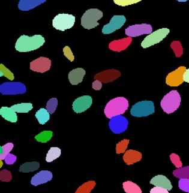
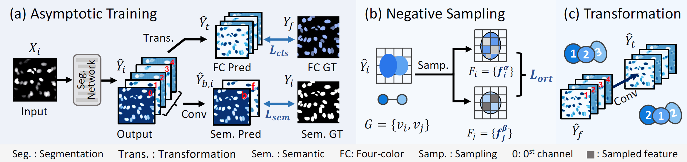

Overview
We introduce a novel cell instance segmentation strategy inspired by the four-color theorem. Viewing cells as countries and tissue background as the ocean, our four-color encoding guarantees that touching instances are labeled distinctly, recasting instance segmentation as a four-class semantic task for simpler, robust differentiation.
Four Color Theorem
Original Map
FC Encoded Map
Cell Examples
Original Cell 1
Encoded Cell 1
Ground Truth 1

Original Cell 2
Encoded Cell 2
Ground Truth 2
Method
- Asymptotic Training: Segment foreground before color assignment.
- Encoding Transformation: Learnable module enforcing minimal-color consistency.
- Orthogonality Loss: Distinct adjacent colors via negative sampling.

Results
- DSB2018: DICE 0.939 · PQ 0.770
- PanNuke: DICE 0.816 · PQ 0.610
- BBBC006v1: DICE 0.954 · PQ 0.935
Code
Explore the full implementation and pretrained models on GitHub.